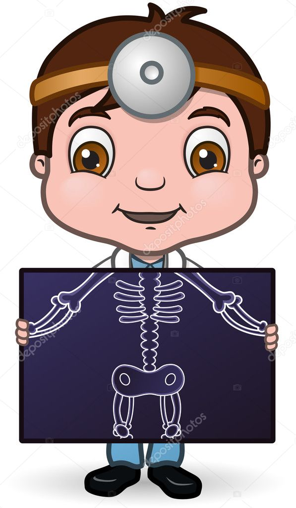
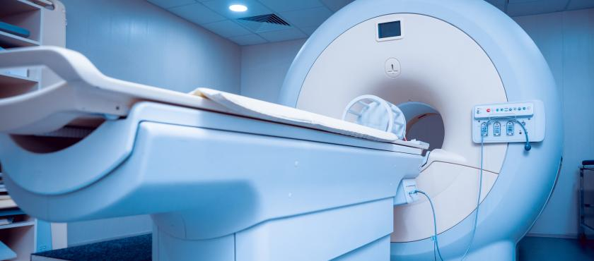
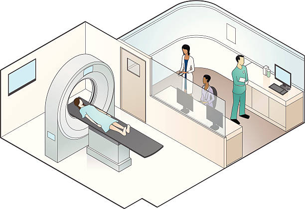
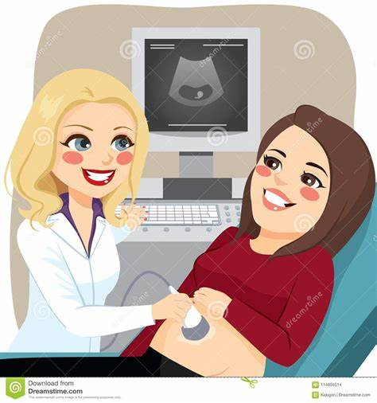
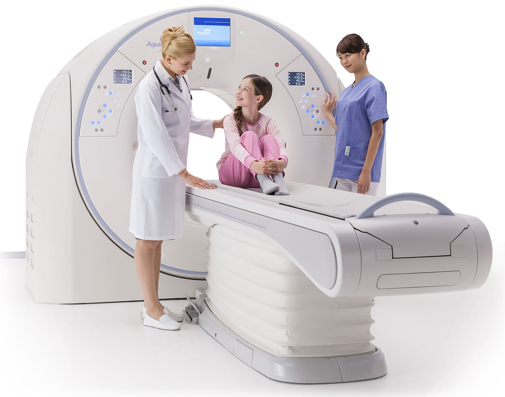

Radiation: Energy that comes from a
source and travel through some material or through space.
X-RAY

Radiographs are produced by transmission of x-rays through a patient to capture device then converted into
image for diagnosis without adding contrast materials such as Barium or Iodine.
Xrays are Generated via accelerated electrons with electrons of tungsten nuclei with anode tube.
Advantages:-
1. Relatively inexpensive
2. X-RAY can used as a portable machines.
DisAdvantage:-
X-RAY use the ionizing radiation which in prolong use leads to formation of Carcinogens which causes cancer.
CT-SCAN(Computed Tomography Scanning)

It refers to Computerized X-RAY imaging procedure in which narrow beam of X-RAYs are used around the body
which produces cross sectional images or slices of a particular organ.
These slices are called tomography images. These contain more detailed information than X-RAYS.
Advantages:-
1. To diagnose Bone tumors and fractures.
2. To observe the location of a tumor or blood clot.
3. To detect and monitor the diseases such as cancers,Heart diseases and Hepatomegaly.
4. For prognosis of cancer treatment.
Disavantages:-
1. CT-Scan is expensive than X-RAYs.
2. Here also ionizing radiation is used which is an X-RAYs. This causes formation of Carcinogens in the
body.
PET Scan(Positron Emission Tomography)

The tracer may be injected swallowed or inhaled depending upon organ or tissue has been studied by PET Scan.
The tracer accumulate in our body which has a higher level of chemical activity. These areas show up bright
spots. Positron Emitting Tracer is injected into body which emitts positrons and two gamma rays.
Advantages:-
1. It detects a stage of cancer earlier than CT / MRI.
2. It determines whether cancer has spread or not.
DisAdvantages:-
1. Expensive.
2. The PET Scan can give false results if chemical balances in the body are not normal.
3. The risk of negative effects from radiation is low.
USG Scan(Ultra Sound Scanning)

High frequency Sound Waves are used to visualize soft tissue structures in the body in real time.
Ionizing radiation is not utilized in this technique. It is particularly useful in imaging of children and
pregnent women.
Advantages:
1. Good for cystic structures and fetus in its amniotic fluids.
DisAdvantages:-
1. Gas filled and bony structures can't be imaged because they absorb only ultrasound beam.
MRI(Magnetic Resonance Imaging)

A MRI uses a strong magnetic field and radio waves to create detailed images of the organs and tissues
within the body.MRI uses large magnet, radio waves and the computer to create a cross-sectional image of a
patients internal organs. Sometimes patients will be injected with intravenous contrast liquid to improve
the apperance of certain body tissue.
Advantages:-
1. Used to identify abnormalities of brain and spinal cord.
2. Diseases of liver and other abdominal organs, tumors.
3. Injuries or abnormalities of joins such as back pain.
DisAdvantages:-
1. MRI which is more costlier than CT Scan.
2. MRI takes a 30mins for the scan.
3. This radiation is harmful if there is repeated exposure.